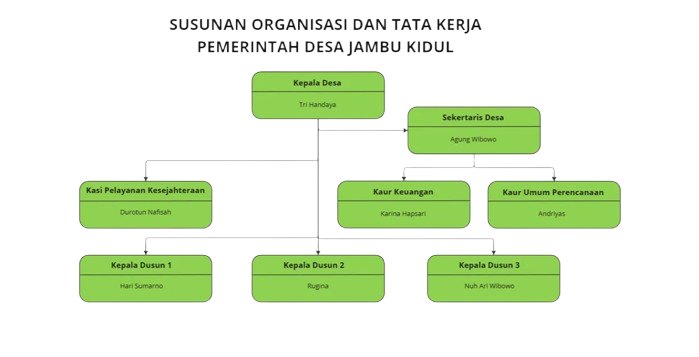
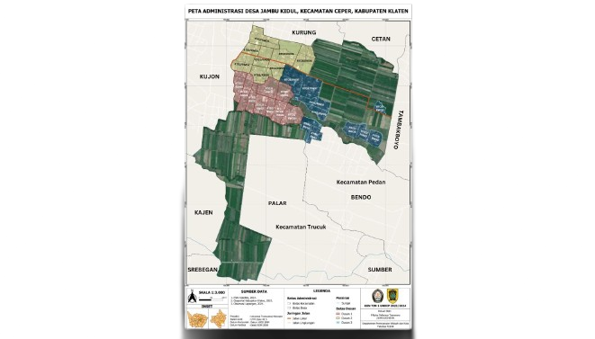

Umum
Nama
Jambu Kidul
Alamat
Jl. Jambukidul, Kecamatan Ceper, Kabupaten Klaten
Ciri Khas
Industri rumahan pengrajin logam
Jumlah Penduduk
3.601 orang
Luas Wilayah
6,16 km²
Visi Misi
Visi
Terwujudnya Masyarakat Desa Jambu Kidul Terbaru: Tertib, Bagus, Rukun dalam tata kelola pemerintahan yang lebih transparan dan bertanggung jawab guna menciptakan kerukunan masyarakat desa yang mandiri dan sejahtera.
Misi
- Meningkatkan pelayanan kepada masyarakat
- Meningkatan partisipasi masyarakat dalam pembangunan
- Mengupayakan peningkatan kualitas Sumber daya Manusia (SDM) masyarakat desa yang bertumpu pada IPTEK (Ilmu Pengetahuan dan Teknologi) dan IMTAQ (Iman dan Taqwa) terhadap Tuhan Yang Maha Esa
- Mengembangkan kerjasama dengan berbagai pihak dalam pembangunan
- Mengupayakan peningkatan perekonomian masyarakat dengan menumbuhkembangkan perekonomian mandiri
- Meningkatkan kemampuan dan peranan wanita dalam semua aspek kehidupan
Sejarah
Asal-Usul Nama
Desa Jambu Kidul memiliki sejarah yang bermula pada zaman pemerintahan Kasunanan Jawa di bawah kepemimpinan Pakubuwono X. Nama "Jambu Kidul" terbentuk karena posisi geografis desa ini berada di selatan dari Pabrik Gula Ceper. Namun, nama ini dipilih untuk membedakannya dari dua tempat lain yang memiliki nama jambu di sekitar pabrik gula, yaitu Jambu Sebelah Barat Pabrik dan Jambu Sebelah Selatan Pabrik.
Nenek Moyang
Cikal bakal penduduk di daerah Jambu Kidul berasal dari seorang kyai bernama Soleh, yang akrab dipanggil Mbah Toleh. Kyai Soleh dipercaya menjadi ulama pertama yang mengajarkan agama Islam di Jambu Kidul. Di Jambu Kidul terdapat sebuah situs peninggalan Mbah Toleh, situs tersebut terletak dalam sebuah kamar di sebelah barat Masjid Baiturrahman Jrebeng , di mana terdapat sebuah batu candi berbentuk kendang, gong, atau alat musik serupa. Situs ini diyakini memiliki kaitan dengan Mbah Toleh
Struktur Pemerintahan

Peta

Batas Utara : Desa Kurung Batas Selatan : Desa Palar Batas Timur : Desa Tambakboyo Batas Barat : Desa Kujon